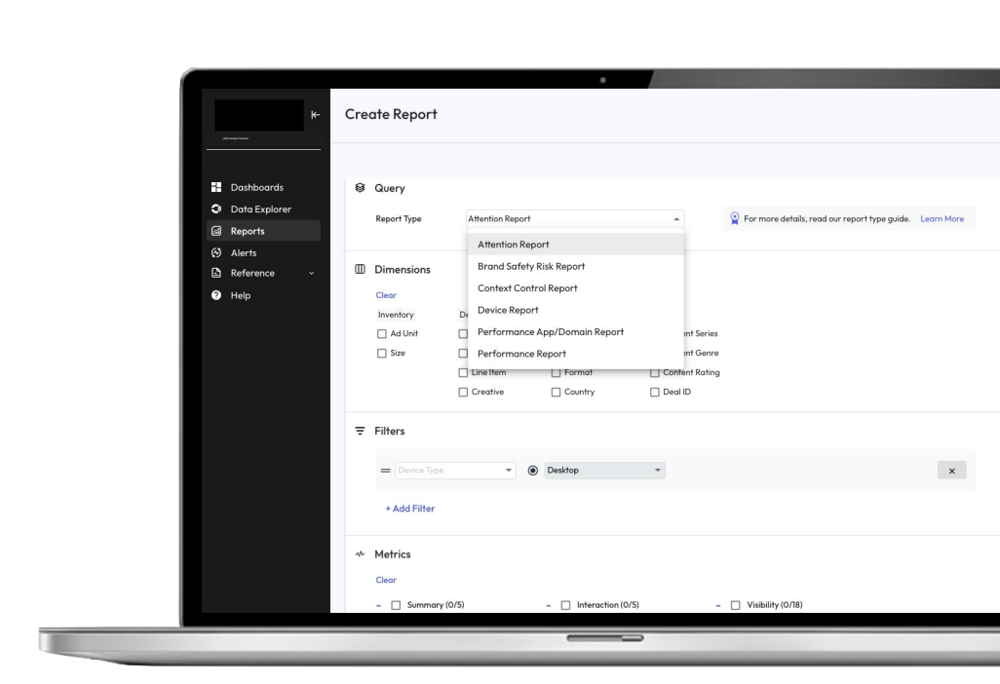

Select Projects
A selection of data and analytics products I’ve led - from government intel to ad-tech to parcel-level real-estate insight.

Property Intelligence Platform MVP
- Problem: Parcel data was fragmented and stale, making parcel-level decisions slow and uncertain.
- Solution: Built an MVP that unified and analyzed parcel indicators with Python, FastAPI, PostGIS, and GeoPandas.
- Impact: Created a base for land-value prediction, helping planners and investors detect shifts earlier.

Publisher Ad Quality Measurement
- Problem: Legacy reporting buried key insights behind slow, cumbersome workflows.
- Solution: Redesigned the product around publisher workflows with faster, more flexible reporting.
- Impact: Improved team efficiency, lowered development overhead, and accelerated feature iteration.

Mobile Ad Viewability Measurement
- Problem: In-app ads were often counted as viewed when users never actually saw them.
- Solution: Operationalized Open Measurement SDK signals for trusted third-party verification.
- Impact: Rebuilt buyer confidence and helped unlock additional in-app ad spend.

Graph-based Intelligence Application
- Problem: Analysts spent hours stitching siloed data to understand network relationships.
- Solution: Built a search-led platform with geo context, visualization, and alerting.
- Impact: Achieved strong fit with mission users and supported expansion into adjacent markets.

Mobile Situational Intelligence App
- Problem: Leaders lost situational awareness when away from desktop tools.
- Solution: Built a mobile alerts app that surfaced early signals from open-source feeds.
- Impact: Enabled military and corporate-security teams to act on timely field intelligence.

Predictive Threat Assessments
- Problem: Intelligence operations were reactive, with action taken only after threats emerged.
- Solution: Operationalized predictive models to generate forward-looking risk assessments.
- Impact: Helped law-enforcement and counter-terrorism teams anticipate emerging risks.